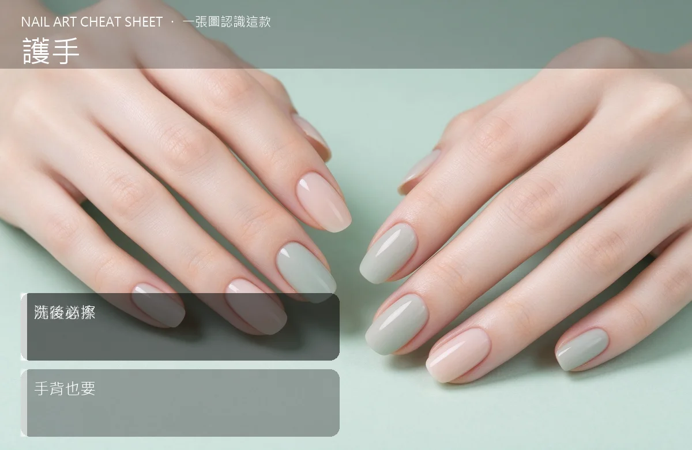

美甲護手是什麼？入門入門攻略
手是女人的第二張臉，洗一次手就擦一次護手霜，防曬別只擦臉忘了手背。
護手原理與辨識重點：美甲師不說的隨時補水
手部皮膚比臉薄、皮脂腺也少，所以特別容易乾。加上我們每天洗手、洗碗、接觸消毒和清潔劑，手的老化速度其實比臉快。護手不是「奢侈品」，是每天固定 3–5 次的保養：洗完手擦、出門前擦、睡覺前擦，長期下來手看起來會年紀小好幾歲。
誰適合做護手？手部乾燥對號入座
所有人都需要，尤其常做家事、辦公室冷氣房工作、冬天戶外活動的人；想讓雙手看起來乾淨細緻的人更是必修。
護手美甲施作步驟：護手霜＋防曬
洗手後 3 分鐘內（皮膚還帶濕氣）擦護手霜 → 重點擦指節、手背、指縫 → 白天外出手背也要防曬（SPF30 以上）→ 睡前厚敷一層、可戴棉手套睡 → 一週做 1–2 次手膜。
護手優缺點分析：美甲持久度與傷甲評估
| 優點 | 說明 |
|---|---|
| 手部保養做好，指節不會暗沉、手背細紋也比較少，整個人看起來更乾淨有禮。 | 是通用流派的招牌，入門就能上手 |
| 缺點 | 說明 |
| 需要隨身帶一條護手霜，剛開始會覺得有點煩，習慣後就跟手機一樣不能少。 | 前置與最常見的錯誤是「只擦掌心、不擦手背」。掌心出油多、反而比較不乾，手背和指節才是最需要滋潤的地方。也別忘記指縫和手腕。沒顧好會打折 |

護手新手雷區：洗後必擦與常見錯誤
注意：最常見的錯誤是「只擦掌心、不擦手背」。掌心出油多、反而比較不乾，手背和指節才是最需要滋潤的地方。也別忘記指縫和手腕。
護手和其他美甲做法的差別比較
「護手霜」跟「凡士林」不一樣：凡士林是封閉性的油，適合極度乾燥或睡前厚敷；日常保養用一般護手霜（含乳液或乳霜質地）就好。兩者可以搭配，不是二選一。
護手美甲常見問題 FAQ
Q：護手霜要選哪一種成分？ A：乾裂嚴重選含尿素、神經醯胺；一般保濕含甘油、乳木果油就很夠。對香味過敏的挑無香精款。
Q：手背黑斑要怎麼辦？ A：多半是日曬造成。每天手背防曬＋一週一次去角質，半年會淡很多；嚴重的話找皮膚科討論淡斑雷射。
Q：睡前可以厚敷護手霜嗎？ A：可以，而且很有效。睡前厚敷、戴棉手套睡，隔天早上手會軟嫩很多，一週做 2–3 次就好。